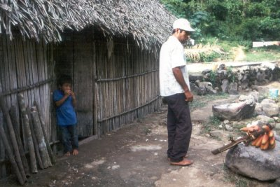
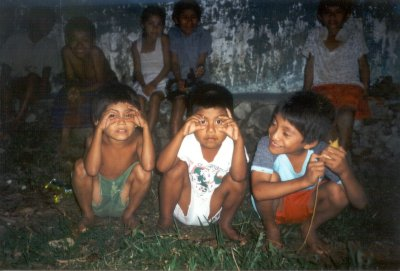

| Home | Kontakt | Steckbrief |
| Wandern/Trekking |
| Klettern/Klettersteige |
| Kanu |
| Fahrradtouren |
| Rucksack-Reisen |
| Touren mit Kindern |
| Wissenswertes |
| Werbung |
Trekking durch die Sierra Madre del SurDiese Trekkingtour habe ich 1997 mit Hauser Exkursionen unternommen.1. Tag: Nach dem Linienflug mit Lufthansa direkt von Frankfurt Main nach Mexiko City haben wir abends unser Hotel direkt am Zocalo, dem zentralen Markplatz gegenüber des Nationalpalastes bezogen. Der Zocalo in Mexico City 2. Tag: Der nächste Tag war angefüllt mit Stadtbesichtigungen rund um den Zocalo. Es fing mit den Wandmalereien von Diego Rivero am Nationalpalast an und endete im anthropologischen Museum. Eine einheimische Führerin stand uns den ganzen Tag zur Seite. Abends haben wir uns dann noch die bekannten Mariachi Spieler angesehen, die einem für ein paar Peseten die Ohren vollsingen. Mariachi Spieler in Mexico City 3. Tag: Es ging per Bus nach Teotihuacan 48km außerhalb von Mexiko City. Dort befindet sich die 61m hohe Sonnenpyramide und die etwas kleinere Mondpyramide. Dort bekamen wir auch gezeigt woraus und wie Tequilla hergestellt wird. Nach einem Mittagessen besichtigten wir auch das Guadalupe Heiligtum. Auf der Sonnenpyramide in Tetuchiacan 4. Tag: Wir verlassen Mexiko City. Da der Vulkan Popocatepetl zu dieser Zeit aktiv war, waren Wanderungen in dem Gebiet nicht möglich. Wir wichen auf den Ixtaccihuatl Vulkan (5286m) aus und besuchten vorher den Wochenendmarkt von Ameameca (2470m). Dort kaufte ich mir ein paar Äpfel und machte einen großen Fehler. Ich aß sie am Ende der Wanderung umgewaschen. Nach der Wanderung ging es per Bus weiter nach Puebla, wo wir ein Hotel bezogen und ich eine unruhige Nacht mit dem Kopf in der WC Schüssel erlebte. Marktplatz in der Nähe des Itztuachetl 5. Tag: Von Puebla, einer sehr reichen Kleinstadt, in der auch der VW-Käfer gebaut wird habe ich wegen meiner Magenverstimmung nicht sehr viel gesehen. Nachmittags ging es per Bus weiter bis nach Oaxaca. In diesem Jahr gab es erstmalig das El Ninjo Phänomen und wir fuhren dicht hinter einem Hurrikan her. Spät abends kamen wir in Oaxaca an. In Oaxaca hat sich die indianische Kultur sehr gut erhalten, weil die Sierra Madre del Sur wie eine Barriere zum mexikanischen Kernland wirkt. 6. Tag: Wir erkundeten Oaxaca zu Fuß und fuhren auch hoch nach Monte Alban. Vor 2500 Jahren wurde die Kuppe des Berges von den Zapoteken abgetragen, um Platz für ein religiöses Zentrum zu schaffen. Abends wurde wieder im Hotel in Oaxaca übernachtet. 7. Tag: Mit einem geländegängigen Allradbus ging es hoch in die Sierra Madre. Vorher hielten wir noch an einem Marktplatz um kleine Geschenke für die örtliche Bevölkerung einzukaufen. Zum Beispiel Süßigkeiten, Stifte und Malblöcke für die Kinder. Nach 2 Stunden Fahrt auf der wir teilweise ziemlich durchgerüttelt wurden erreichten wir mit La Soledad (2600m) den Startpunkt der Wanderung. Es ging während der nächsten 22km an den Dörfern San Miguel Peras (2200m) und Cerro del Chocolate (2500m) vorbei. Am Nachmittag bauten wir an einem kleinen Fluß bei Llano Mecate (2200m) unsere Zelte auf. Die Sierra Madre 8. Tag: Ungefähr 15km waren heute zum Tagesziel San Fernando de Matamoros (1700m) zu gehen und es ging hauptsächlich bergab. Am Weg lag die Rancheria Miguel Hidalgo (2300m). Viermal mußte ein Fluß über- und auch durchquert werden. Übernachtet wurde in der Nähe von San Fernandos an einem Fluß. Bei einer Flußdurchquerung 9. Tag: Es fing nach dem Frühstück mit einer Fahrt in einem abenteuerlichen lokalen Bus an. Der Fahrer saß auf einer Art Campingstuhl und die Sitzreihenabstände waren für Liliputaner oder Beinlose gedacht. Ich und meine Knie waren dann doch sehr froh als wir am Ausgangspunkt der heutigen Tageswanderung angekommen waren. Es ging von San Vicente (2200m) zu den 17km entfernten Höhlen von San Sebastian des las Grutas (1900m). Die Zelte wurden in der Nähe des Höhleneinganges aufgebaut. Mexikanische Familie 10. Tag: Mit einem lokalen Führer besichtigten wir die Höhlen von San Sebastian. 2km lang ist der Weg durch die Höhle. Danach setzten wir unsere Wanderung über Nochhuy (1600m) und Siola de Vega (1400m) bis nach Hochihuj fort. Begleitet wurden wir von einem lokalen Guide mit abenteuerlicher Fußbekleidung. Die Landschaft ging von schattigem Fichtenwald über Kakteenlandschaft in Halbwüste über. Es wurde wieder im Zelt übernachtet. Es geht auch ohne teure Trekkingschuhe 11. Tag: Mit einem Bus fuhren wir etwa 3 Stunden lang nach El Pedimento (1900m). Die Fahrt war abenteuerlich, da der vor uns her reisende Hurrikan die Straße teilweise verschüttet hatte. In El Pedimento stiegen wir aus und gingen über den Pilgerweg nach Juquila, einem der drei wichtigsten Wallfahrtsorte Mexikos. Nach einer 5km langen Wanderung übernachteten wir zur Abwechslung mal wieder im Hotel. Hausschlachtung 12. Tag: Die Tagesstrecke betrug 17km und führte über das Dorf Santiago Yoitepec (2000m), Wohnort der Chatins über Cerro Nube (2200m) und Cerro Cinco nach Santa Maria Temaxcaltepec (1500m). Außerhalb von Santa Maria wurde in Zelten übernachtet. Spielende Kinder 13. Tag: Über Santos Reyes Nopala (900m) ging die Etappe über 16km nach San Gabriel Mixtepec (700m). Unterwegs mußte der El Rio Maiz durchquert werden. Wir befanden uns nun in der Kaffeeregion Mexikos. Durch die Plantage El Costoche ging es bis zum Campplatz bei San Gabriel.  Die ersten roten Bananen meines Lebens  Spielende Kinder 14. Tag: Die heutige Etappe führte uns dem pazifischen Ozean ein entscheidendes Stück näher. Bis zum Mittag wanderten wir und danach wurden wir von zwei Pick Up's abgeholt und nach Puerto Escondido gebracht. Die folgen des Hurrikans waren dort deutlich zu sehen. Teilweise hatte es die komplette Küstenstraße ins Meer gespült. In Puerto Escondido übernachteten wir in einem komfortablen Hotel. Das Meer ist schon zu riechen 15. und 16. Tag: Wir verbrachten die beiden Tage mit Baden im Meer und abendlichen Restaurantbesuchen. Das war jetzt fast Pauschalurlaub. Durch die Nähe zum Äquator ging die Sonne regelmäßig um 6 Uhr auf aber auch um 6 Uhr unter. Außerdem versank die Sonne abends nahezu senkrecht mit einem Wahnsinnstempo im Meer. Blick vom Hotel auf den Strand 17. Tag: Nach dem Transfer zum Flughafen ging es mit einem Inlandsflug zurück nach Mexiko City und von da nach einem Abendessen per Lufthansa 747 zurück nach Frankfurt. Einer der rasanten Sonnenuntergänge 18. Tag: Wieder zurück in Deutschland hatte ich in Frankfurt noch so viel Aufenthalt, dass ich noch über den Weihnachtmarkt am Römer spazieren konnte, was den Kulturschock steigerte. Abends ging es dann per Zug zurück nach Duisburg. Links: Hauser Exkursionen |